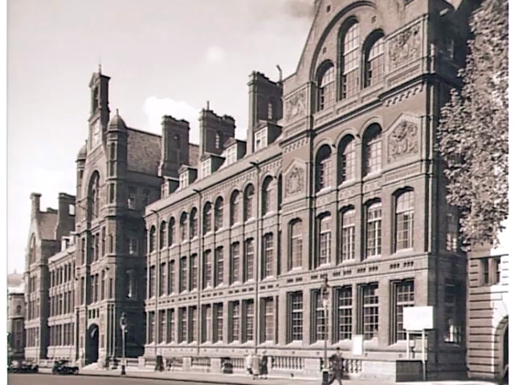

The City & Guilds Institute was set up in 1878 to establish a national standard for technical
education and in 1884, after talks with the Royal Commission,
they opened the Central Technical College on Exhibition Road.

The Central Technical College changed its name to the City and Guilds College, and in
1910 joined Imperial College after its formation in 1907.
The CGCU also dates back to 1910, along with the college!